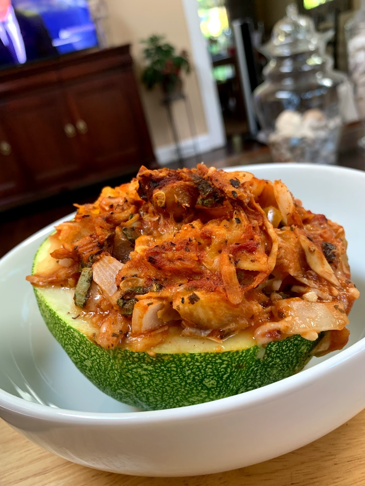

Zucchini Boats
Easy, tasty, and similar ingredients to ratatouille so meal prep is easy
Number of Servings:
1Ingredients
- 1 zucchini
- 0.5 bell pepper
- 0.5 cup marinara sauce
- 0.25 cup parmesean cheese
- 0.25 cup diced onion
- 1 tsp minced garlic
- 0.5 bunch fresh basil
- 0.5 tsp salt
- 0.5 tsp pepper
- 1 tsp oregano
- 3 oz shredded chicken or ground turkey
Instructions
- Prehead oven to 375°F
- Slice zucchini in half and scoop out middle
- Dice bell pepper and onion
- Mix together scooped out zucchini, marinara sauce, bell pepper, cheese, salt, garlic, onion, oregano, and meat
- Fill hollow zucchini with mixture
- Top with more cheese and basil
- Put in oven for 25 minutes or cheese is golden brown and zuchinni is tender or microwave for 12 minutes